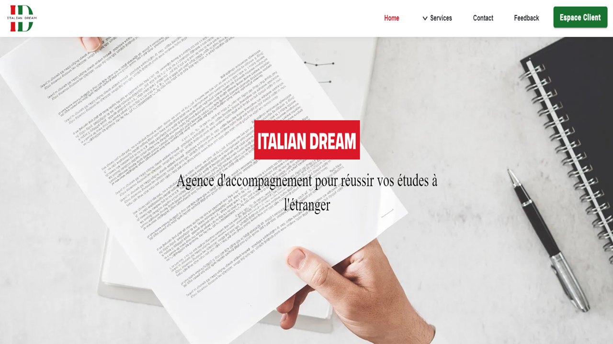

Projects

Smart Agriculture System
This project enables users to monitor agricultural parameters in real-time, control actuators, and analyze plant health using computer vision.
Angular
Spring Boot
IoT
ESP32
Raspberry Pi

Italian Dream ( In process )
This project involves the development of a website and client portal for an agency that helps students pursue higher education in Italy. The website offers detailed program information, while the client portal provides a personalized dashboard for managing applications and communications with the agency.
Angular
TypeScript
Spring Boot
Postgres